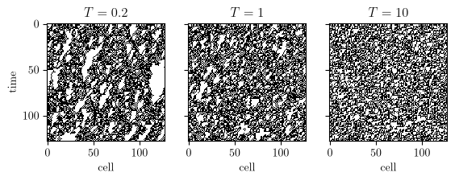
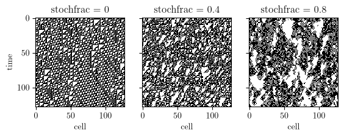
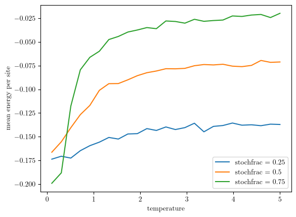

Thermal and Stochastic Automata
A deterministic rule is an idealization; real systems shake.
The three classes here corrupt the elementary automata in physically distinct ways, and each reduces exactly to the clean pyCA.eca.ECA in the appropriate limit.
The tests hold them to it.
The Ising cellular automaton
pyCA.ica.ICA makes the lattice a hybrid: each step, every cell independently chooses (with probability stochfrac) whether to behave as an Ising spin in contact with a heat bath or as an obedient cell of the underlying rule.
A thermal cell reads its local Ising energy - aligned neighbors mean low energy, frustrated neighbors mean high - and flips with the heat-bath[1] probability \(1/(1 + e^{-2E_i/T})\).
Frustration makes it flip eagerly; alignment makes it hold fast, absolutely so as \(T \to 0\).
from pyCA import ICA
ica = ICA(110, N=256, temperature=1.5, stochfrac=0.3)
ica.run(300)
print(ica.energy) # mean Ising energy per site
-0.078125
Let’s watch the two dynamics compete.
We hold stochfrac at 0.6 and raise the temperature from left to right; time runs down each panel.
import numpy as np
import matplotlib.pyplot as plt
fig, axs = plt.subplots(1, 3, figsize=(6.4, 2.6), sharey=True)
for ax, T in zip(axs, (0.2, 1, 10)):
ica = ICA(110, N=128, temperature=T, stochfrac=0.6,
rng=np.random.default_rng(2))
ica.run(127)
ax.imshow(ica.spacetime(), cmap='binary', interpolation='nearest')
ax.set_title('$T = %g$' % T)
ax.set_xlabel('cell')
axs[0].set_ylabel('time')
plt.show()

In the cold a thermal cell flips only when its neighbors frustrate it, so aligned regions hold, and the white patches are domains of zeros.
They are zeros because rule 110 leaves a run of zeros alone, while it sends 111 to 0 and eats into runs of ones.
As \(T\) grows the heat bath flips aligned cells too, and by \(T = 10\) the domains have melted into noise.
Now hold the temperature low, \(T = 0.5\), and turn up stochfrac instead; at 0 we have rule 110 itself.
fig, axs = plt.subplots(1, 3, figsize=(6.4, 2.6), sharey=True)
for ax, f in zip(axs, (0, 0.4, 0.8)):
ica = ICA(110, N=128, temperature=0.5, stochfrac=f,
rng=np.random.default_rng(3))
ica.run(127)
ax.imshow(ica.spacetime(), cmap='binary', interpolation='nearest')
ax.set_title('stochfrac = %g' % f)
ax.set_xlabel('cell')
axs[0].set_ylabel('time')
plt.show()

Rule 110’s triangles thin out as the heat bath claims more of the lattice, and domains of zeros grow in their place.
The mean energy per site measures this.
We let each run settle for 100 steps, then average ica.energy over the next 400, for three values of stochfrac:
temperatures = np.linspace(0.1, 5, 25)
for f in (0.25, 0.5, 0.75):
meanEnergy = []
for T in temperatures:
ica = ICA(110, N=512, temperature=T, stochfrac=f,
rng=np.random.default_rng(4))
ica.run(100)
energy = []
for _ in range(400):
ica.evolve()
energy.append(ica.energy)
meanEnergy.append(np.mean(energy))
plt.plot(temperatures, meanEnergy, label='stochfrac = %g' % f)
plt.xlabel('temperature')
plt.ylabel('mean energy per site')
plt.legend()
plt.show()

At low temperature the three curves start close together, between -0.2 and -0.16.
As the temperature rises they climb and fan out: the larger stochfrac, the closer the energy comes to zero, its value for independent cells that are equally likely to be 0 or 1.
Sweep the temperature at fixed stochfrac and watch the energy respond; then sweep stochfrac at fixed temperature and watch rule 110’s gliders fight the noise.
At what noise level do they stop surviving long enough to collide?
Map it out.
Noisy rules
pyCA.stochastic.NoisyECA applies the rule everywhere, then flips each output bit independently with probability noise: the epsilon-perturbed automata.
Small noise turns sharp class boundaries into genuine phase transitions[2]; a Class II texture can survive small epsilon and dissolve at large, with a critical point in between.
from pyCA import NoisyECA
noisy = NoisyECA(90, N=512, noise=0.005)
noisy.run(500)
At noise = 0 you have the deterministic rule; at noise = 1, its complement; at noise = 0.5 the rule is forgotten entirely and every cell is a fair coin.
Asynchronous updating
pyCA.stochastic.AsyncECA never corrupts the rule, only the clock.
Each step, each cell updates with probability update_fraction and otherwise holds its value.
Synchrony is a strong assumption[3], and some celebrated CA behaviors lean on it harder than you might expect:
from pyCA import AsyncECA
lazy = AsyncECA(110, N=256, update_fraction=0.7)
lazy.run(300)
Run rule 110 at a few update fractions and watch what survives; the gliders that carry rule 110’s computation are creatures of the synchronous clock.